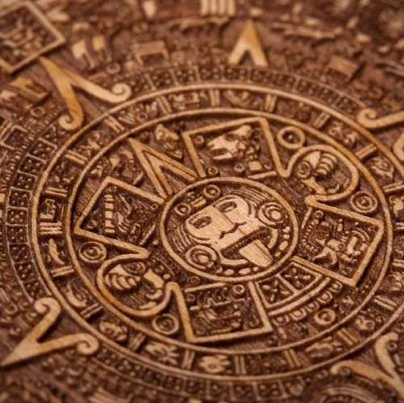
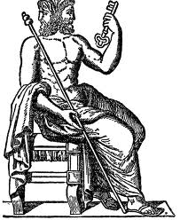
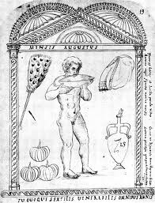
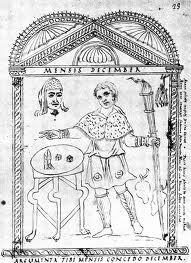

Calendarul intrebuintat astazi in majoritatea tarilor isi are originea in calculul intocmit de catre astronomul egiptean ,Sosigene ,in anul 46 i.Hr. pe vremea imparatului Iulius Caesar.Care este semnificatia cuvantului Calendar?...Romanii numeau"CALENDAE" primele zile ale lunilor, atunci cand datornicii obisnuiau sa-si achite contributiile catre creditori.
Originea calendarului roman trebuie cautata la enigmaticii etrusci,cuvantul "Calendas" fiind de altfel de obarsie etrusca.Conform scrierilor autorilor romantici,vechiul calendar roman,anul lui Romulus,se compunea doar din 10 luni.Lunile aveau fie 30 fie 31 de zile,rezultand in final un an de 304-305 zile.Romanii, incepand de la Numa Pompiliu si pana la reforma lui Caesar, concepusera un calendar de 12 luni,dintre care 4 aveau 31 de zile,7 cate 29 de zile,si 1 de 28 de zile.Anul avea 355 de zile si incepea pe 1 Martie.Pentru a pastra concordanta cu anotimpurile,romanii intercalau la fiecare 2 ani o luna suplimentara de 22 de zile.Aceasta luna se numea Mercedonius si se afla intre zilele de 23-24 Februarie.
 Majoritatea denumirilor lunilor caracteristice folosite astazi sunt mostenite de la acest vechi calendar.Daca era folosit corect ,acest sistem permitea anului roman ,in medie,sa stea cat de cat aliniat cu anul tropical.Totusi,daca prea multi ani intercalari erau omisi asa cum s-a intamplat dupa al II-lea Razboi Punic,calendarulpierdea alinierea la anul tropical.
Reforma Iuliana a avut intentia de a elimina problema definitiv.Calendarul Iulian a fost introdus de Iulius Caesar dupa consultari cu astronomul Sosigene din Alexandria si a fost cel mai probabil prin aproximarea anului tropic.Calendarul Iulian a ramas in uz in unele tari pana in secolul al XX-lea,acesta fiind folosit si astazi de unele biserici Ortodoxe.
Pentru a pune de acord anul calendaristic cu cel astronomic la propunerea doctorului napolitan Aloysius Lilius,Papa Grigore al XIII-lea a decretat la 24 Februarie 1582 reforma calendarului.Noul calendar introdus este cunoscut de atunci sub numele de Calendarul Gregorian.
Pentru mai multe informatii,vizitati site-ul:
http://www.hetel.ro/index.php/2011/06/3324/Tovirnac Tudor clasa a9-a A